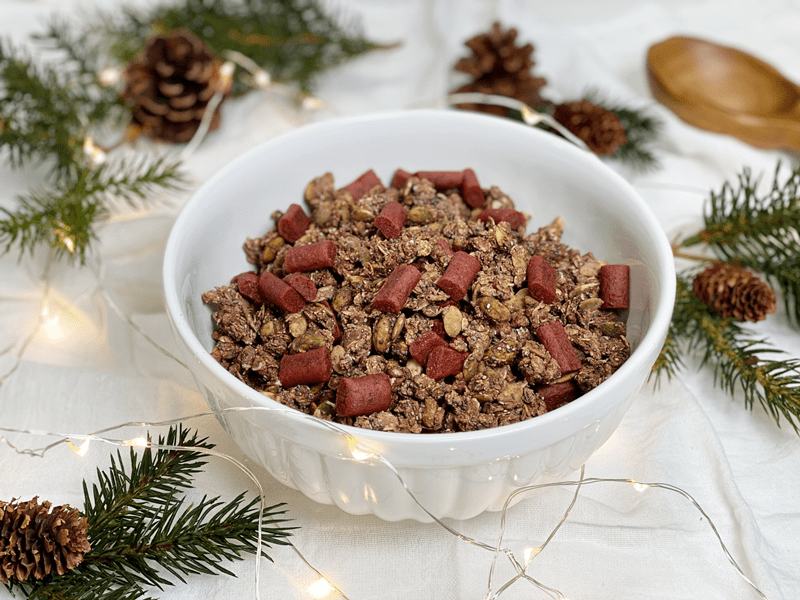
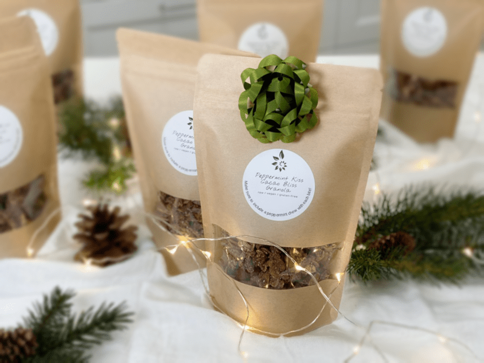

Peppermint Kiss Cacao Bliss Granola
– raw, vegan, gluten-free –
If you love chocolate, and if you love peppermint, I created this recipe just for you. The month of December is known for sweet chocolate and pepperminty treats… I felt combining the two into granola would synchronize into sweet harmony. You can have to be careful with peppermint; it can easily overpower any recipe. That is why I decided not to add any peppermint extract to the granola batter, but rather add chopped up raw candy canes.

I also decided to use a light hand when I added the raw cacao. I used both the powder form and the nib form. Raw cacao is very, very bitter, and the more you use, the more sweetener you will need to balance it out. My goal was to keep the sugar level down, even though I was using natural sugars.
As I was putting this recipe together, I already soaked and dehydrated oats, pumpkin seeds, hazelnuts, and pistachios on hand. If you don’t already have these prepared in such a manner, you can soak all of the items listed and skip the dehydration process. If you do this, it will add moisture to your batter, so you may not need to add the 1/2 cup of water. It will also take longer to dehydrate since the oats, nuts, and seeds will be a bit plumped up with water.
If you can’t eat nuts or oats, feel free to substitute them with other items from your pantry. Raw buckwheat that has been sprouted would be great, coconut flakes, different nuts, and so forth. The beauty of creating our foods at home is that we can modify them to fit our individual dietary needs, and let’s not forget to satisfy the good ole’ taste buds. :) Enjoy.
 Ingredients:
Ingredients:
Yields 10-12 cups dried granola
- 2 cups (188 g) rolled, gluten-free oats, soaked
- 1 cup (158 g) raw pumpkin seeds, soaked
- 1/2 cup (73 g) chopped raw hazelnuts or pecans, soaked
- 1/4 cup (50 g) chopped raw pistachios, soaked
- 1/3 cup (60 g) chia seeds
- 1/3 cup (98 g) maple syrup
- 1/2 cup (100g ) water
- 1 Squirt liquid NuNatural stevia
- 1/4 cup (40 g) raw cacao nibs
- 1/4 cup (24 g) raw cacao powder
- 1 tsp (7 g) Himalayan pink salt
- 1 tsp (2 g) ground cinnamon
- 1 1/2 cups (185 g) chopped raw peppermint candy canes
Preparation:
- After the oats are done soaking, drain, and rinse them under cool water for 2 minutes.
- Use your fingers to agitate them while rinsing.
- Hand squeeze the excess water from them and place them in a large bowl.
- Drain and rinse the nuts and seeds, adding to the bowl with the oats.
- Add the chia seeds, sweetener, water, stevia, cacao nibs, cacao powder, salt, and cinnamon.
- With your hands, mix everything. Taste test. Add more of whatever you feel is needed. :)
- Feel free to use any liquid sweetener.
- Loosely spread the batter on the teflex sheet that comes with the dehydrator.
- Dry at 145 degrees (F) for 1 hour, then reduce to 115 degrees (F) for 6- 8 hours or until dry.
- The dry time will vary depending on your machine, how full it is, and the climate.
- Part way through the drying time, flip the tray over onto the mesh sheet and peel off the non-stick sheet.
- All to cool, then pour into a large bowl — hand mix the peppermint candy canes in with the granola.
- Store in an airtight container on the counter for 1-2 weeks. You can also freeze it for up to 3 months.
The Institute of Culinary Ingredients™
- Dates are a fantastic ingredient for raw food recipes, click (here) to read why.
- What is raw cacao powder?
- Why do I specify Ceylon cinnamon? Click (here) to learn why.
- What is Himalayan pink salt, and does it matter? Click (here) to read more about it.
- Are oats gluten-free? Yes, read more about that (here).
- Are oats raw? Yes, they can be found. Click (here) to learn more.
- Do I need to soak and dehydrate oats? Not required but recommended. Click (here) to see why.
Culinary Explanations:
- Why do I start the dehydrator at 145 degrees (F)? Click (here) to learn the reason behind this.
- When working with fresh ingredients, it is essential to taste test as you build a recipe. Learn why (here).
- Don’t own a dehydrator? Learn how to use your oven (here). I do, however honestly believe that it is a worthwhile investment. Click (here) to learn what I use.

Gift idea… bagged granola makes for a delicious and nutritious gift!
© AmieSue.com